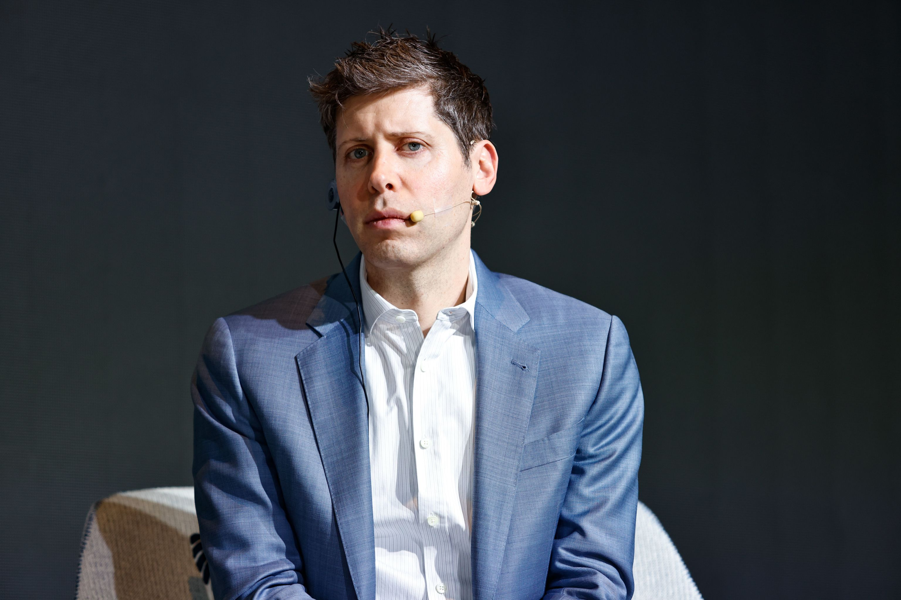

Sam Altman nació el 22 de abril de 1985 en Chicago, Illinois, Estados Unidos. Hijo de la dermatóloga Connie Gibstine, es el mayor de cuatro hermanos. Fue criado como judío y se declara abiertamente gay. Se crio en St. Louis, Misuri, y tuvo su primera computadora a la edad de ocho años.
Realizó la secundaria en la John Burroughs School y cursó estudios de informática en la Universidad de Stanford, hasta abandonar en 2005 esta prestigiosa universidad para desarrollar a tiempo completo Loopt, una aplicación para telefonía móvil que indicaba a tus amigos la ubicación.